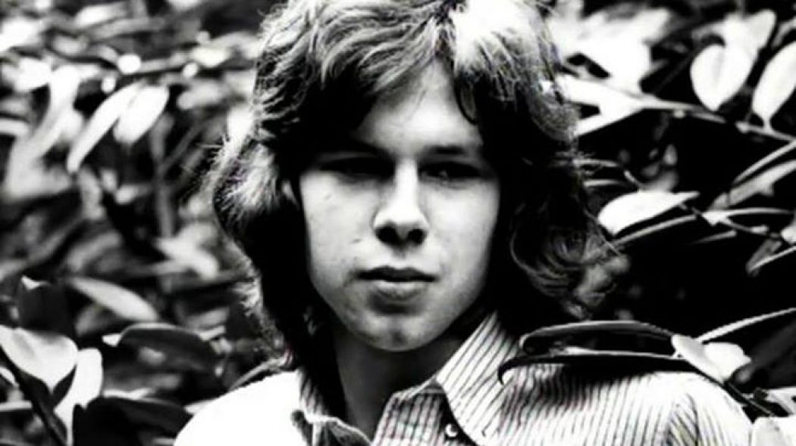

Nick Drake fue un cantautor y músico británico de folk que hoy en día es reconocido mundialmente por sus discos, que marcaron una nueva influencia para muchos músicos contemporáneos. Su estilo de folk oscuro con muchas afinaciones
propias y ritmos exóticos, junto a su capacidad para tocar complejos patrones en la guitarra y cantar, nunca fue del todo replicado. Nick vivió hasta los 26 años, fue estudiante de Literatura Inglesa, hasta que dejó la carrera
poco antes de terminarla para dedicarse enteramente a la música.
Pero su carrera musical nunca despegaría comercialmente, sus discos fueron muy escasamente vendidos, y el recibimiento también, en
los shows fue muy limitado. Al punto de que muchos de sus conocidos narran escenas en las que Nick tocaba la guitarra mientras todo el lugar hablaba sin prestar atención, u otra en que directamente dejó de tocar
“Nick apareció a eso de las 9 pm. Todavía estaban limpiando las sillas y las mesas (de una cena anterior). Sin decir una palabra empezó a tocar y una audiencia de unas diez o quince personas se acercaron al frente
del escenario. El resto de la gente continuó moviendo sillas, limpiando después de la comida o sólo conversando. Después de cinco o seis canciones, agarró la guitarra la guardó en su estuche y se bajó del escenario
No
tenía la confianza o el carisma que John Martyn tenía. Si alguien estaba siendo ruidoso en el bar, John podía de alguna manera terminar ganando su atención”
Robert Jones
“Soy un artista muy nervioso y estoy siempre dando vueltas antes de un show, pero para calmar mis nervios me acerco a otros y digo “Estás bien?” Nick era monosilábico. En ese show particular estaba muy tímido.
Hizo el primer set y después, algo terrible debió haber pasado. Estaba haciendo su primer tema, Fruit Tree, y se fué en el medio de la canción. Simplemente dejó el escenario”
Ralph McTell sobre la última fecha conocida de Nick Drake
Todos los problemas de Nick para conseguir la apreciación del público sumados a sus escasas entrevistas (sólo hay una conocida en toda su vida) y su pobre sociabilidad hicieron que su carrera musical
pasara ignorada por los oyentes durante toda su vida. Esto es algo que lo impactaría enormemente y sería junto a su depresión, uno de los motivos por los cuales a los 26 años se quitaría la vida con una sobredosis de antidepresivos
Hay
muchos indicadores que apuntan que Nick Drake habría sido un ejemplo de Eneatipo V Sexual. Como característica significativa del tipo cinco, es muy común el mecanismo de compartimentalización
La palabra compartimentalización, aparece un montón cuando los amigos o la familia habla sobre Nick. Parecía mantener sus grupos de amigos separados unos de otros, muy raramente hablando sobre
algún amigo en companía de otro.
Antes de la muerte de su hijo, Rodney y Molly Drake asumieron que la imposibilidad de ayudarlo con su enfermedad, tenía que ver con la incapacidad de comunicarse con él, que si de alguna
manera hubieran sabido qué hacer podrían haber hecho más. En su funeral, rodeados por varios grupos de amigos que su hijo había “compartimentalizado”, se volvió aparente que todos los que los conocían sentían lo mismo sobre
él
Todas las descripciones de sus conocidos lo definen como alguien muy callado, desapegado, que nadie comprendía ni conocía demasiado bien
Un personaje desapegado, pero adorable, también, y absolutamente encantador. Venía a mi casa en Nothing Hill y se quedaba todo el día, o la noche. Sin decir mucho, pero tocando álbums y canciones
Era como si apenas estaba ahí,
realmente. No estoy segura de si lo llamaría timidez. Nunca sentí como si perteneciera aquí en absoluto. Era espectral
Linda Thompson
Recuedo uno de sus informes cerca del final a su primer escuela. El director dijo que ninguno de nosotros parecía conocerlo muy bien. Y creo que era así. Todo el tema con Nick, la gente no lo conocía mucho
Rodney Drake
Yo estaba en Fitzwilliam, al mismo tiempo que Nick y yo éramos compañeros de supervisión en el segundo año. Él era siempre una especie de figura misteriosa, y no pasaba para nada ningún tiempo socializando con sus compañeros o la universidad.
Pasaba su tiempo con amigos de su escuela o de la música. […] el nunca decía mucho, y nunca hacía el trabajo de las supervisiones, sólo se dejaba llevar por el movimiento
J Venning
Nick era un observador. El siempre estaba ahí, flotando en el borde observándolo todo. Tenía una cualidad etérea, era muy sensible sobre como eran las cosas, la belleza de las cosas, era
muy amable y perseguía las cosas más altas
Victoria Lloyd
Un personaje un poco aislado que vivía mucho en su cabeza. Era el tipo que simplemente se levantaba en el medio de la noche y se iba, y todos decían, donde irá Nick? Probablemente solo iba a su habitación,
pero lo hacía misterioso
Brian Wells
Sus canciones están llenas de metáforas sobre su propia vida, como Fruit Tree, donde predice lo que sucedería después de su muerte, la fama que le llegaría. Y también plagadas de sentimentalismo romántico. En su música
es el lugar donde Nick puede expresar sus sentimientos y su mundo interior, y sus ideas. Tal como Claudio Naranjo decía sobre Chopin. Mientas que en la vida real parecía que era para los otros un personaje silencioso,
o tímido y amable. Sólo al final de su vida comenzarían a expresarse hacia afuera sus conflictos internos a la forma de depresión y retraimiento
Es difícil imaginar una situación hoy donde un artista no hiciera ninguna pregunta, no tuviera una posición clara, o nada que decir respecto a su carrera. Pero Nick realmente era así. Era muy claro sobre su música, pero
casi totalmente indiferente sobre todo lo demás
Después de unos pocos días recibí una llamada. Nick había tocado sólo dos o tres fechas, y dijo -no puedo hacer esto ya, me voy a casa- En un concierto,
en la universidad de Warwick, Nick había subido al escenario y peleado una batalla infructuosa contra la gente golpeando las copas en el bar y hablando. Era muy deprimente para él, muy desalentador. El simplemente no tenía la personalidad que diría ¡Callense al fondo, estoy tratando de tocar!
Joe Boyd
Nadie recuerda que Nick tuviera alguna novia. Había chicas en Cambridge que estaban locas por él. Se preocupaban por él, le hacían almohadones, y cosas. Pero nunca pasaba nada, por lo menos que yo supiera
Brian Wells
Por todo el romanticismo de sus canciones, parecía que Nick no lo podía vivir en su vida. En una de sus canciones Hazey Jane, cantaba “si las canciones fueran líneas de una conversación, la situación
estaría bien”. Cuando no había canciones, en cambio, había cada vez más silencio
Era en este punto que la vida de Nick parecía tomar un rumbo desde una problemática reserva, a un profundo y más alienante sentido de aislamiento. En una ocasión, simplemente desapareció de su departamento en Hampstead por tres o cuatro semanas, sin decirle a su familia o amigos donde iba.
Poco después, un amigo de Cambridge llamó al piso de casualidad. Después de tocar la puerta sin que nadie atienda, se asomó a la ventana y vió a Nick simplemente sentado, mirando a la pared.
Estaba tan desconcertado de lo que había visto que se fue. Siempre vistiéndose indiferente, Nick empezó a verse cada vez en peor estado, sin lavarse su pelo o limpiarse las uñas
Nick era un tipo extremadamente sensible. Creo que comunicarse era difícil para él de todos modos, y fumar no le hacía mejor. Tenía estándares e ideales tan increíblemente altos, y se le hacía muy difícil ser comprendido, conectar. La gente lo veía como este personaje remoto, frágil, descuidado, ligeramente romántico. Y creo que él era consciente de eso, y se tornó cada vez más de ese modo
Julian Lloyd
Uno de los incidentes que mejor nos describe a Nick y sus problemas de sociabilización fue cuando su mánager Boyd lo llevó a visitar a Francoise Hardy, una famosa cantante francesa, a quién le habían gustado los
álbums de Nick que Boyd le había enviado, con la intención de que grabaran algo juntos
Fue insoportable. Nick se sentó ahí, mirando hacia abajo, tomando su té y no dijo una sola palabra en todo el tiempo, y yo tuve que llenar los silencios incómodos
John Boyd
Nick parecía, y sin ninguna duda, tan tímido, y envuelto en si mismo, que en retrospectiva, estoy atónita que haya logrado venir a verme dos o tres veces […] la comunicación entre nosotros nunca fue genial, pero
tenía la impresion que el hecho que supiera que era apreciado y querido, le daba confianza, y que sentir que su presencia silenciosa era aceptada, era suficiente para él
Francoise Hardy
Cuando hacíamos el album de Francoise, Nick vino y se sentó conmigo en la sala de control. Yo entablaba una típica conversación. El estaba muy callado en los momentos entre preguntas. Había como un silencio, entonces
yo hacía otra pregunta. Y cada vez que lo hacía, levantaba sus cejas y abría bien sus ojos, y era como si hiciera un esfuerzo para encontrar la respuesta que satisfaciera la situación del momento,
como si – Tengo que lidiar con este hombre poniéndome en aprietos, se han dirigido a mí y me han hecho una pregunta. Haré lo mejor para poder dar una respuesta -.
Después, habiendo exitosamente logrado sacar una respuesta, se retiraba de nuevo al silencio,
hasta el momento en que yo me sentía inclinado en hacerle otra pregunta, y la misma secuencia de eventos terminaba sucediendo. Era muy bizarro. Nunca conocí alguien como el. Y no era antipático. Pero sentías como que lo ponías en una posición difícil simplemente haciéndole las mas inofensivas preguntas.
Pensé que lo estaba pasado muy mal consigo mismo. Era imposible llegar a conocerlo, menos en ese breve encuentro
Richie Unterberger
Su vida se hundiría hacia el final en un espiral de depresión y aislamiento cada vez más patente. En una situación de la que nadie parecía poder sacarlo, porque nadie podía comunicarse de manera significativa con
él. En sus últimas etapas logra grabar su último disco, Pink Moon, y lo entrega a su compañía discográfica en otra de las particulares anécdotas sobre sus problemas para interactuar
Lo ví en la recepción después que volví de almorzar. Estaba hablando con alguien y vi esta figura en el rincón del asiento, y de repente me di cuenta que era Nick. Tenía una gran caja con los masters bajo su brazo,
y le dije “Ya has tomado un té?” y dijo “ehm, sí”, le dije “quieres venir arriba?” y dijo, “si, bueno”. Entonces fuimos arriba a mi oficina, arriba del descanso, era un descanso que daba a la gran oficina con
una enorme mesa redonda donde todos trabajaban, y donde había un gran reproductor de audio y un equipo de sonido, y se quedó sentado en mi oficina por casi media hora. Después de ese tiempo dijo “Debería irme
yendo” y yo le dije “Bueno, ha sido agradable verte” y se fue, con las cintas bajo su brazo. Después de una hora la chica que trabajaba en el escritorio frontal me llama y dice “Nick dejó sus cintas”. Entonces
fui y era todo una cinta Master que decía Nick Drake Pink Moon, y pensé “ese no es un álbum que yo conozca”. Lo primero que hice es llevarlo al estudio a hacer una copia de seguridad, porque ese era el propio
master del disco. Y al otro día lo puse en el equipo de la oficina grande y escuchamos entonces Pink Moon
David Sandison
Se veía terrible. Estaba flaco, su pelo estaba muy sucio. Y casi que se descargó, no entiendo, decía, la gente dice que soy genial y no tengo nada para mostrar por eso, no tengo dinero, y los albums no se venden
Creo que Nick quería las dos cosas a la vez, que lo dejaran solo, y al mismo tiempo, quería desesperadamente comunicarse y ser reconocido. Pero nunca vi alguien hacer menos para ser reconocido
Gabrielle Drake